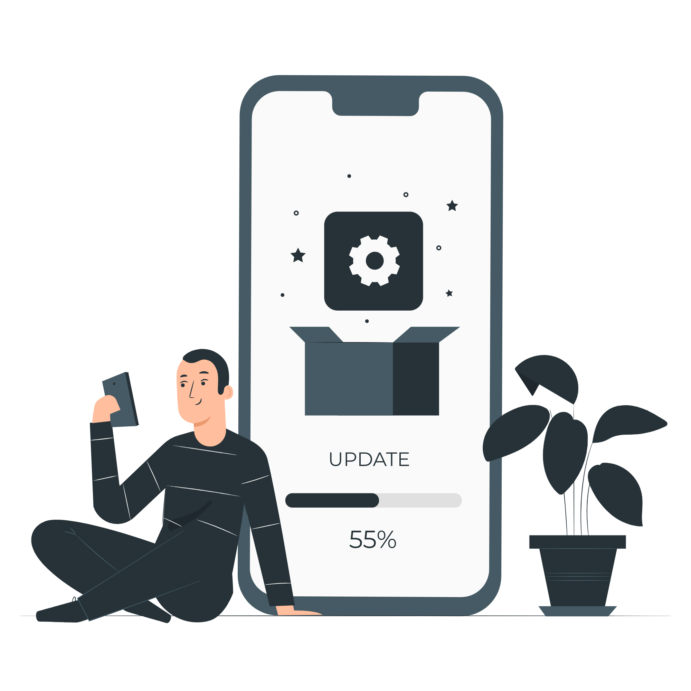

Welcome to the website of Satria Imawan Adi Putra Pande! I am from Singaraja, Bali and currently a member of Bangkit Cohort CC-02. I have a great interest in the world of technology and strive to develop my skills in this field.
Ever since I was young, I have had a keen interest in technology which has continued to grow over time. As a result, I decided to pursue an education in the field of technology in order to deepen my knowledge and become an expert in the field.
Currently, I am participating in the prestigious Bangkit training program in Indonesia. I hope to learn more and develop my skills alongside experienced professionals in the technology industry.
In addition, I enjoy collaborating with like-minded individuals. I believe that by working together, we can create amazing things and make positive contributions to society.
Thank you for visiting my website. I hope you find the information here useful. Please do not hesitate to contact me if you have any questions or wish to collaborate. I am always open to discussion and learning together.
Self-Development
Personal Development Becoming the best version of myself is the ultimate goal in life. Many things can be done to achieve this goal. Here are some ways that I do as a way to develop myself.
Achieving personal and professional goals
Personal development is important because it enables individuals to set and achieve their personal and professional goals. By continuously developing their skills and knowledge, individuals can enhance their performance and improve their chances of success.
Adapting to change

In today's rapidly changing world, it is important to be adaptable and flexible. Personal development helps individuals to stay up-to-date with the latest trends, technologies, and developments in their field, enabling them to adapt and thrive in dynamic environments.
Improving overall well-being
Personal development is not just about improving professional skills and knowledge, but also about improving overall well-being. By maintaining a healthy work-life balance, practicing self-care, and cultivating positive relationships, individuals can improve their overall quality of life, happiness, and fulfillment.